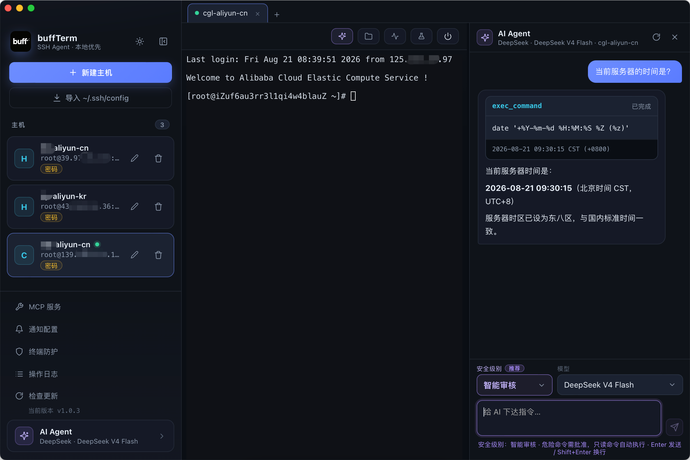

🧠
自研 AI Agent
手写 Agent 编排层，无框架依赖。SSE 流式解析、工具调用循环、审批拦截、审计留痕全部可控。
- exec / read / 巡检 / 趋势分析
- 三级安全级别 + 自定义规则
自研 AI Agent 编排层 + 协议级 SSH，能力全部在本地闭环。
手写 Agent 编排层，无框架依赖。SSE 流式解析、工具调用循环、审批拦截、审计留痕全部可控。
基于终端真实命令行判定，Tab 补全、历史回放、编辑键全覆盖。命中规则回车前弹窗确认。
密码与 API Key 经 AES-256-GCM 加密落 SQLite，主密钥存系统钥匙串，数据库拷走也无法解密。
把勾选服务器开放给 Codex / Claude Desktop。Streamable HTTP + token 认证，只读 / 管控 / 放行三档权限。
只读基线采集 + 中文巡检报告（含木马 / 挖矿风险），确认后自动执行整改步骤，全程审计与邮件通知。
CPU / 内存 / 磁盘 / 负载仪表盘，历史趋势最长 90 天，线性回归估算资源增速与达阈值天数。
真实界面截图，交互与暗色主题一目了然。

协议级 SSH，不依赖系统 ssh / sftp 进程。
下载 buffTerm，连接第一台主机，让 AI 开始帮你干活。
macOS Universal DMG · Windows NSIS EXE · 未公证版本首次使用可能提示系统授权